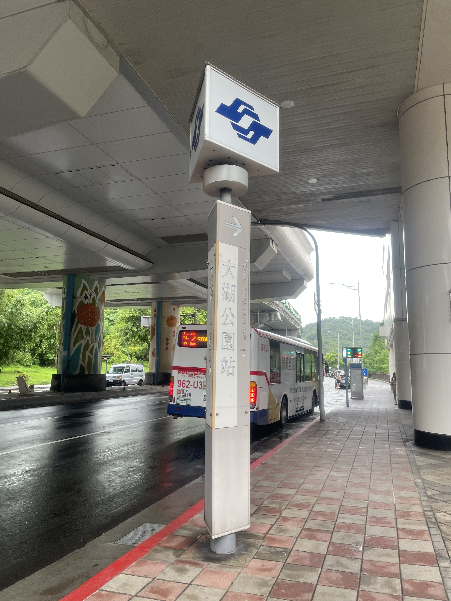
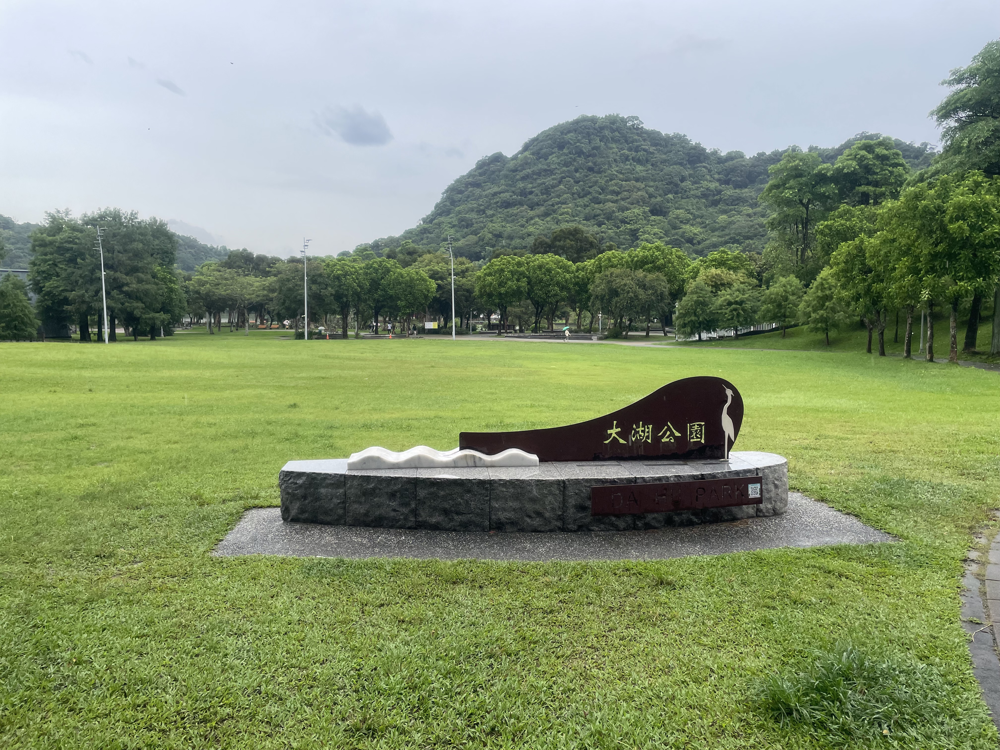
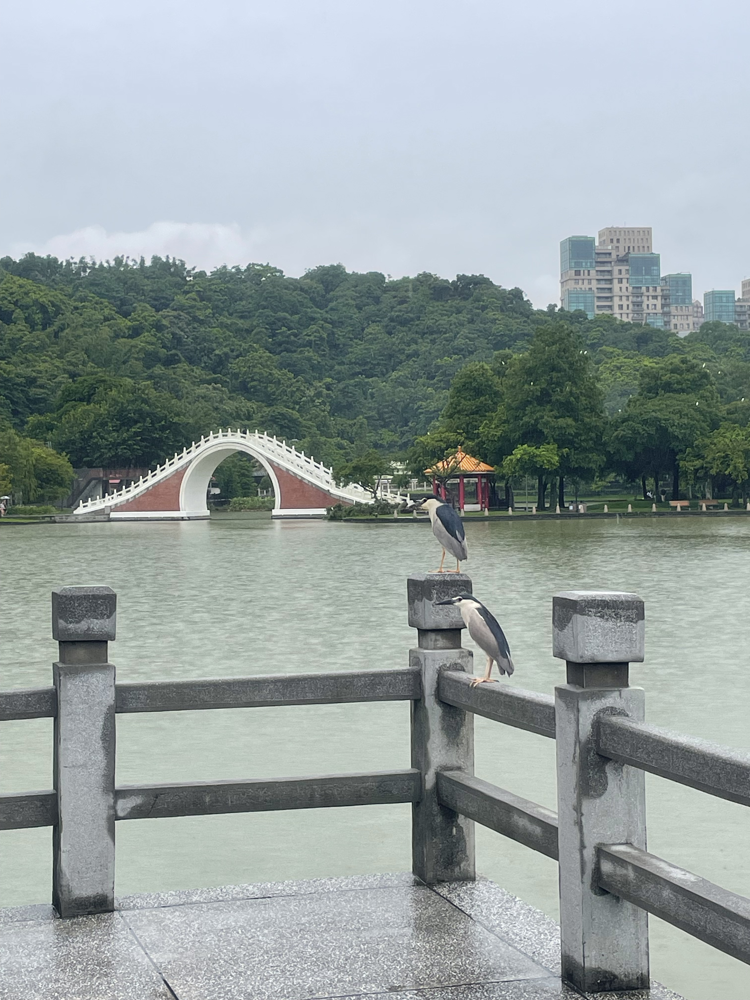
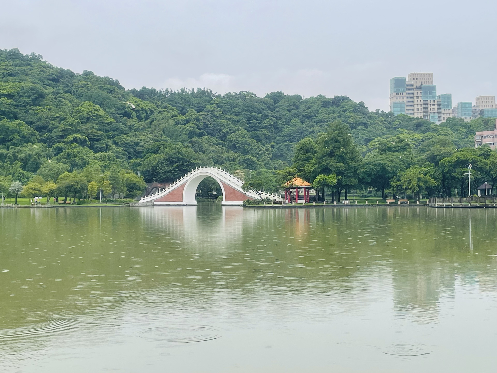

台北市南港區
基本資訊
位於台北市東北部，原為以農業與漁業為主的郊區，隨著都市擴張與科技產業發展，逐漸轉型為兼具商業、科技與住宅功能的現代化行政區。內湖區的地形以丘陵、河谷與沿湖平地交錯，擁有台北少數的自然景觀及水岸環境，使都市生活與自然生態得以共存。 區內的發展呈現出高度多樣性，沿主要幹道與科技園區周邊，辦公大樓、購物中心與科技公司林立，形成新興商業與就業中心；而靠近山區與水岸的地帶，仍保有登山步道、休閒公園與傳統聚落，提供居民與遊客親近自然的空間。
推薦景點
| 大湖公園
是內湖區最大的城市公園之一，也是居民休閒與自然觀賞的重要場域。公園以中心湖泊命名，湖水清澈、湖岸綠意環繞，營造出都市中難得的寧靜景觀。 公園內設有環湖步道、慢跑道與自行車道，適合散步、慢跑或騎行，並規劃親水平台與涼亭，讓民眾可以近距離觀賞湖面與水鳥生態。四周綠地廣闊，草坪與樹林提供野餐、休憩與戶外活動的空間，成為居民放鬆身心的去處。



